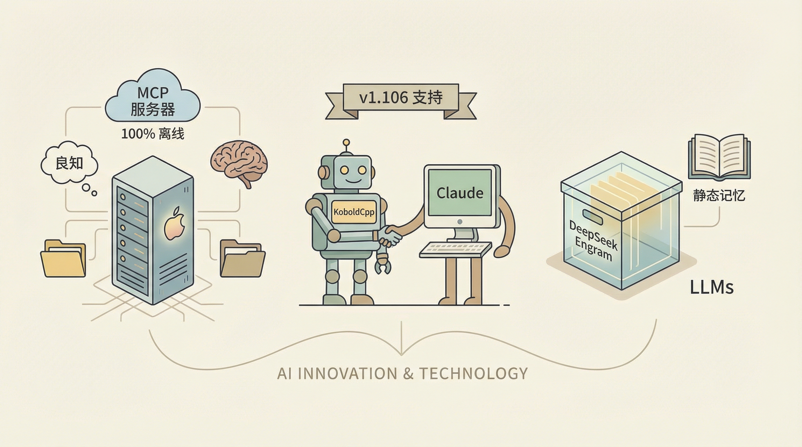

近日，一位Reddit用户u/TheTempleofTwo分享了一项创新技术：MCP服务器，该服务器旨在为本地大型语言模型（LLM）提供内存、文件访问以及“良知”，实现100%离线运行于Apple Silicon平台。
该技术的核心在于解决当前本地LLM的三大问题：无状态、缺乏治理以及缺乏实际操作能力。通过构建一个运行在Mac Studio M2 Ultra上的完整技术栈，包括LM Studio（聊天界面）、Hermes-3-Llama-3.1-8B（MLX，4位）和Temple Bridge（MCP服务器），MCP服务器为LLM提供了文件读写、命令执行等功能，并引入了治理协议，确保AI在执行任务时遵循一定的规则。
两克伴AIGC日报
2026-01-18 星期日

本期关注：MCP服务器赋能本地LLM实现苹果硅100%离线运行，提供内存、文件访问及治理能力；KoboldCpp v1.106集成MCP支持成Claude替代品；DeepSeek Engram推出静态记忆单元，以O(1)复杂度优化LLMs知识检索与推理性能，推动AI离线实用性与效率提升。
🔥 今日焦点
KoboldCpp v1.106版本正式加入了对MCP服务器的支持，成为Claude Desktop的便捷替代品。这一新功能标志着KoboldCpp的持续发展和创新。MCP（Multi-Channel Protocol）支持使得KoboldCpp能够无缝连接所有提供的MCP服务器，包括HTTP和STDIO传输方式，并自动将AI选择的工具请求转发至相应的MCP服务器。这一改进不仅提升了KoboldCpp的兼容性，也为第三方客户端提供了便利。
KoboldCpp v1.106的MCP桥接功能，使得用户可以轻松获取所有服务器上的工具列表，选择AI使用的工具，并可选择性地启用工具调用API。这一更新对AI领域具有重要意义，它不仅丰富了AI工具的多样性，也为AI应用的开发提供了更多可能性。
DeepSeek AI近期发布了一篇名为《通过可扩展查找实现条件记忆：大型语言模型的新稀疏维度》的论文，提出了Engram这一静态记忆单元。该技术的核心思想是，通过在LLMs中引入原生记忆查找功能，避免每次通过昂贵的transformer层重新计算静态知识（如实体、事实或模式）。这可以理解为将“记忆”与“推理”分离。与传统的MoE模型专注于条件计算不同，Engram引入了条件记忆，使得LLMs能够进行更深层次的推理，更好地处理长文本，并将早期层的计算任务从GPU上卸载。
Engram的关键亮点包括：知识查找的时间复杂度为O(1)，而非重新计算；使用显式的参数化记忆而非隐式权重；提升推理、数学和代码性能；实现大规模内存扩展。这一技术的提出对于AI领域具有重要意义，它不仅为大型语言模型提供了一种更高效的知识存储和检索方式，还有助于提升LLMs在处理复杂任务时的性能。对于AI从业者而言，Engram的问世无疑为LLMs的发展开辟了新的方向，有望推动AI技术的进一步突破。
📄 重点论文
**核心贡献**: 对前沿大型语言模型和多模态大型语言模型的安全评估进行了综合分析，提出了针对多模态模型的安全评估框架。
**与AI Agent的关联**: 为AI Agent的安全性和可靠性提供了评估标准，有助于推动多智能体系统在多模态环境下的应用。
🛠️ 产品推荐
Show HN: Video-to-Grid是一款基于Vision API的视频分析工具，它可以将视频转化为2D缩略图网格，类似于接触式胶片。该产品利用VAM Seek技术，将视频内容浓缩成一张包含48帧的图片，全面展现视频内容。这种格式不仅适用于人类视频导航，也适用于AI分析。Video-to-Grid原型设计简洁高效，为视频分析提供了一种创新的方法，帮助用户快速、直观地了解视频内容。
---
Show HN：一款基于Lua的开放源代码服务器端渲染多人游戏引擎。该引擎无需客户端代码，旨在为开发者提供高效、便捷的游戏开发解决方案。通过使用Lua语言，开发者可以轻松实现游戏逻辑，降低开发难度。该产品可解决传统游戏开发中客户端与服务器之间数据交互复杂、开发周期长等问题，助力开发者快速构建高质量游戏。
---
Show HN: Optimized vLLM for Blackwell (SM_120) – 59T/S on DeepSeek-R1是一款针对Blackwell (SM_120)的优化版vLLM，采用Kernel 6.14，针对RTX 5090进行优化。通过FlashInfer技术，在DeepSeek-R1平台上实现了59 t/s的高性能。该产品旨在为用户提供高效、稳定的AI计算解决方案，有效解决大规模数据处理和计算难题，助力技术从业者提升工作效率。